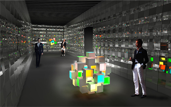

<!DOCTYPE html PUBLIC "-//W3C//DTD XHTML 1.0 Transitional//EN"
"http://www.w3.org/TR/xhtml1/DTD/xhtml1-transitional.dtd">
<html xmlns="http://www.w3.org/1999/xhtml">
	<head>
		<meta http-equiv="content-Type" content="text/html; charset=utf-8" />
		<title>Tudotech - O Seu Portal de Tecnologia!</title>
		<style type="text/css">
			body{
				background-image:url(imagens/fundo.png);
				font-family:lucida sans;
				font-size:15px;
				margin:0px
			}
		</head>
	<body> 
		
		
		<div style="margin-left:15%; margin-right:15%">
			<div style="background-image:url(imagens/cabecalho.png); width:100%; height:200px; text-align:center">
				
			</div>
			<div style="background-color:#dddddd; width:25%; height:760px; float:left">
				<div style="margin:10px">
					Página Incial
					<hr />
					<a href="#">Video Games</a>
					<hr />
					<a href="#">Informática</a>
					<hr />
					<a href="#">Celulares</a>
					<hr />
					<a href="#">Contato</a>
				</div>
			</div>
			<div style="background-color:#ffffff; width:75%; height:760px; float:left">
				<div style="margin:10px">
						<h1 style="font-size:22px;">Destaque: Evento ganha painel gigante de LED orgânico.</h1>
						<h2 style="font-size:16px; color:#363636;">Centenas de telas de 14 cm compõem grande mural eletrônico.
						Tecnologia permite o ajuste de cores, inclusive dos tons de branco.</h2>
						
						Durante o evento de design no Fuori Salone, em Milão, que acontece de 12 a 17 de abril a Verbatim 
						apresenta os primeiros painéis de iluminação de LED orgânico (OLED) comercialmente disponíveis no mercado. 
						Os displays OLED de 14x14 cm serão criados em parceria com o designer de iluminação Satoshi Uchihara, 
						responsável pelas instalações do World Heritage Site, e vão incorporar um dos maiores painéis OLED do mundo
						Chamados de VELVE, os OLEDs da Verbatim produzem iluminação de alta qualidade, suave e colorida, 
						com visual exuberante e permitem que os projetistas expressem sua criatividade de diferentes formas.
						<hr />
						<div style="width:48%; float:left; padding:1%; border-left:thin solid">
							<h3 style="font-size:18px;">Brasil é o 4º país que mais compra computadores.</h3>
							Um estudo divulgado pela IDC Brasil revelou que foram vendidos 
							13,7 milhões de computadores em 2010 no país, sendo 55% desktops e 45% notebooks.
						</div>
						<div style="width:48%; float:left; padding:1%; border-left:thin solid">
							<h3 style="font-size:18px;">Empresa dos EUA desenvolve 1º 'beija-flor-robô'.</h3>
							Uma empresa da Califórnia, nos Estados Unidos, apresentou o primeiro "robô" em forma 
							de beija-flor que pode ser controlado remotamente para voar como um pássaro de verdade.
						</div>
				</div>
			</div>
			<div style="background-image:url(imagens/rodape.png); width:100%; height:40px; float:left;">
				
			</div>
		</div>
	</body>
</html>